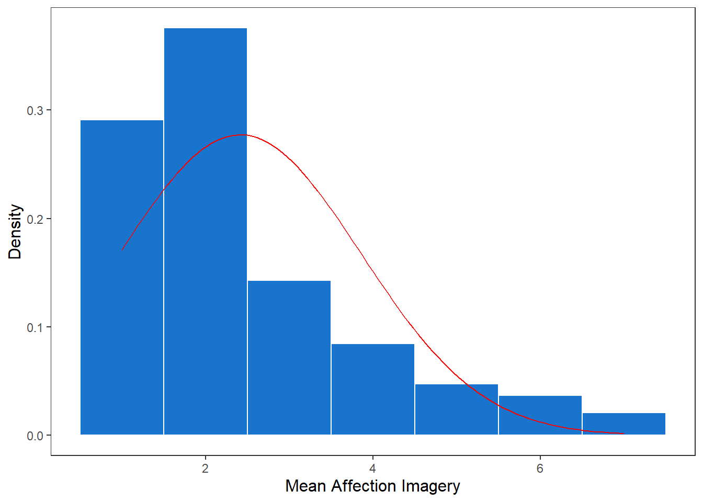
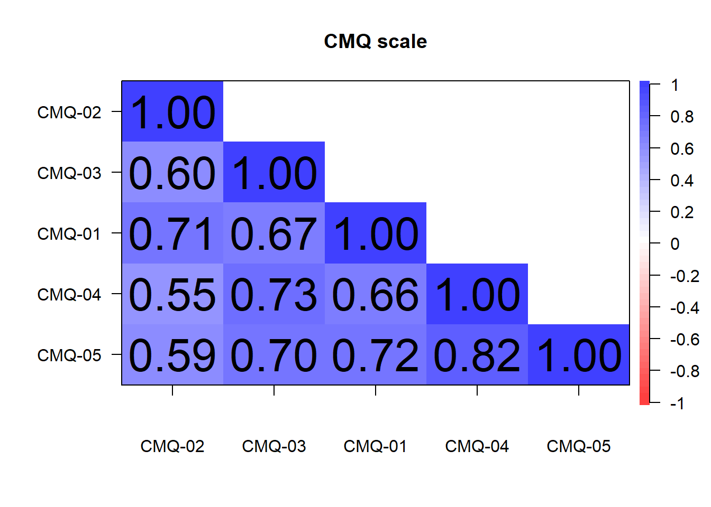

# Calculate the mean duration in seconds for each sender and sort by mean durationdat_duration %>%group_by(sender) %>%summarise(N =n(), mean_duration =mean(duration, na.rm =TRUE)) %>%arrange(mean_duration)
## socio demographics (numeric variables)ggplot(questionnaire, aes(x = socio_age)) +geom_histogram(binwidth =1, fill ="dodgerblue3", color ="white") +labs(x ="Age", y ="Frequency") +theme_apa() +theme(plot.title =element_text(hjust =0.5))
summary(questionnaire$socio_age)
Min. 1st Qu. Median Mean 3rd Qu. Max.
37.00 39.50 42.00 45.67 50.00 58.00
Affective Imagery
In the following, the associations to “Climate Change” are listed, whereby a person can state a maximum of 5 associations (cognitive component), these are evaluated afterwards regarding their affect (affective component).
In the histogram I have shown the average value of this affect of the mentioned associations, thereby the scale ranges from 1-7, has a mean value of 4:
questionnaire$mean_affImg <- questionnaire %>%select(matches("^affImgAffect")) %>%rowMeans(na.rm =TRUE)# Calculate mean and standard deviationmu <-mean(questionnaire$mean_affImg, na.rm =TRUE)sigma <-sd(questionnaire$mean_affImg, na.rm =TRUE)# Create the histogram with normal distribution overlayggplot(questionnaire, aes(x = mean_affImg)) +geom_histogram(aes(y = ..density..), binwidth =1, fill ="dodgerblue3", color ="white") +stat_function(fun = dnorm, args =list(mean = mu, sd = sigma), color ="red") +labs(x ="Mean Affection Imagery", y ="Density") +theme_apa() +theme(plot.title =element_text(hjust =0.5))

Scales
######################################### reverse code all items#########################################> see negative correlation between single itemspsych::cor.plot(r =cor(questionnaire[, str_detect(string =colnames(questionnaire),pattern ="^GCB")], use ="pairwise.complete.obs"),upper =FALSE, xlas =2, main ="GCB scale")
Warning in cor(questionnaire[, str_detect(string = colnames(questionnaire), :
the standard deviation is zero
psych::cor.plot(r =cor(questionnaire[, str_detect(string =colnames(questionnaire),pattern ="^CMQ")], use ="pairwise.complete.obs"),upper =FALSE, xlas =2, main ="CMQ scale")
Warning in cor(questionnaire[, str_detect(string = colnames(questionnaire), :
the standard deviation is zero

psych::cor.plot(r =cor(questionnaire[, str_detect(string =colnames(questionnaire),pattern ="^CRKQ")], use ="pairwise.complete.obs"),upper =FALSE, xlas =2, main ="CRKQ scale")
Warning in cor(questionnaire[, str_detect(string = colnames(questionnaire), :
the standard deviation is zero
psych::cor.plot(r =cor(questionnaire[, str_detect(string =colnames(questionnaire),pattern ="^CCSQ")], use ="pairwise.complete.obs"),upper =FALSE, xlas =2, main ="CCSQ scale")
Warning in cor(questionnaire[, str_detect(string = colnames(questionnaire), :
the standard deviation is zero